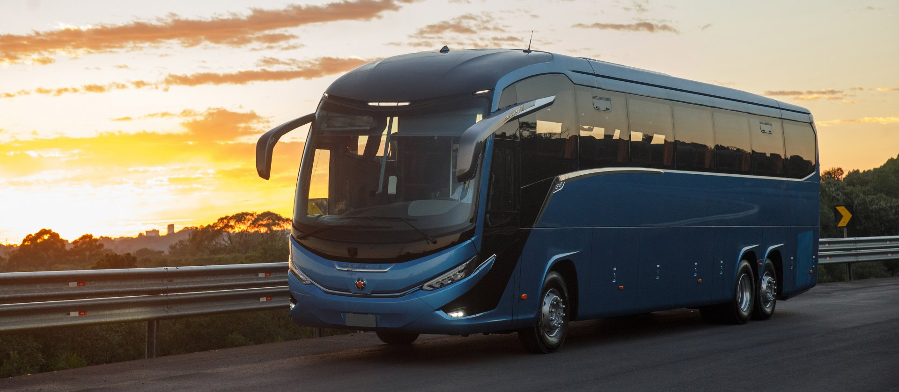
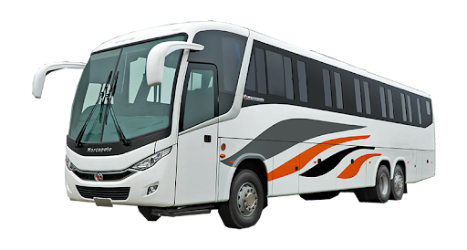
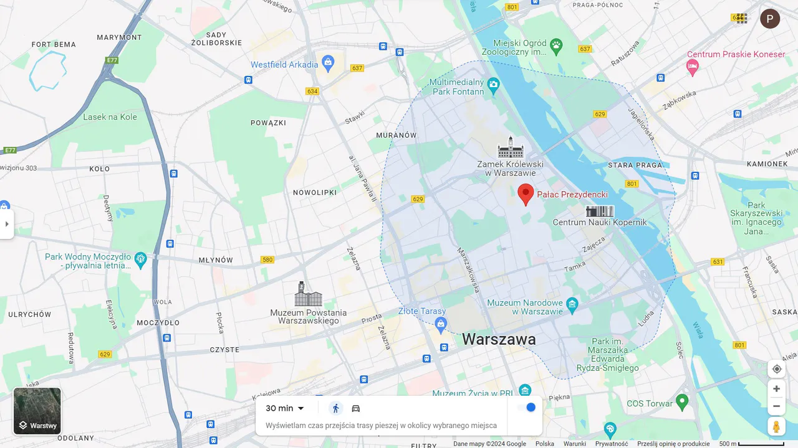

Welcome aboard our reliable and comfortable bus service, connecting Kitwe and beyond! Whether you're commuting within the Copperbelt Province or planning a journey to Lusaka and other destinations across Zambia, we're your trusted travel partner. We pride ourselves on punctuality, safety, and providing a smooth and enjoyable travel experience. Our modern fleet is well-maintained, and our friendly drivers are committed to getting you to your destination comfortably and on time. Sit back, relax, and let us take care of the journey.

With a strong presence across Zambia's key urban centers, our bus service proudly connects the Copperbelt heartland of Kitwe, Ndola, and Chingola with the nation's vibrant capital, Lusaka. From our operational bases in each of these strategic locations, we facilitate seamless travel for commuters, business professionals, and leisure seekers alike. Our deep understanding of the transportation needs within and between these significant cities allows us to offer reliable, comfortable, and punctual journeys. Whether you're traveling within the Copperbelt's interconnected network or embarking on the longer route to or from Lusaka, our dedicated team and well-maintained fleet ensure a smooth and stress-free travel experience across these vital Zambian destinations.
Our Reach: Connecting Zambia's Key Cities We've established a vibrant
network across Zambia's most dynamic urban centers, ensuring seamless
travel between the Copperbelt – encompassing Kitwe, Ndola, and
Chingola – and the bustling capital, Lusaka.
Kitwe: Rooted in the heart of the Copperbelt, our Kitwe hub is more
than just a location; it's our foundation. We provide reliable and
comfortable connections within the region and act as a vital link to
broader destinations.
Ndola: In the welcoming city of Ndola, a crucial transport nexus, our
presence facilitates effortless onward journeys. We're here to connect
you smoothly within the Copperbelt and beyond.
Chingola: Serving the western Copperbelt, our Chingola location
ensures that this important mining community and its surrounding areas
have access to dependable transportation solutions.
Lusaka: Our strategic hub in the energetic capital city provides a
vital artery connecting the Copperbelt with the center of Zambia. We
offer frequent and comfortable services, bridging distances for
business, education, and personal connections.
Our commitment to these four key locations – Kitwe, Ndola, Chingola,
and Lusaka – underpins our mission to provide a stylish, clean, and
dependable travel experience that keeps Zambia connected.

We're here to make your journey as smooth as possible. Reach out to us
through the following channels:
Kitwe:
Address: Kitwe Central Bus Station, Freedom Avenue, Kitwe
Phone: +260 211 234 567
Email: kitwe@hardworklogistics.co.zm
Ndola Branch:
Address: Ndola Bus Terminal, Broadway, Ndola
Phone: +260 212 345 678
Chingola Branch:
Address: Chingola Bus Station, Independence Way, Chingola
Phone: +260 212 456 789
Lusaka Branch:
Address: Inter-City Bus Terminal, Lumumba Road, Lusaka
Phone: +260 211 567 890
General Inquiries & Customer Support:
Email: info@hardworklogistics.co.zm
Website: www.hardworklogistics.co.zm
Social Media:
We look forward to hearing from you and assisting with your travel
needs!